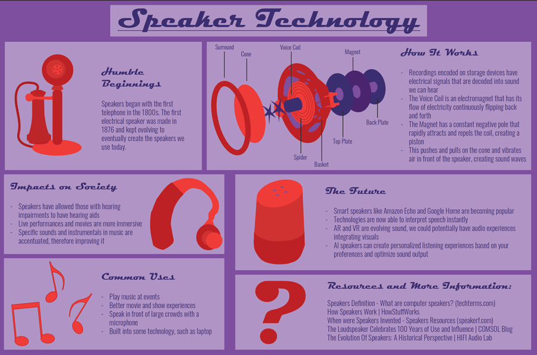

|
|
|||||||||
| Home Page || Printed Bookmark || Digital Photography || Speaker Infographic | |||||||||
|  |
My infographic project required research, so this was my most difficult project. Not only did I have to create my own illustrations, I also had to make sure my facts were correct. I was assigned to research a form of Communication Technology, and I chose to do speakers. My first step was to gather information from credible sources to ensure that my info was right. Once I had my research organized, I started coming up with design ideas. I started my design process by deciding on a color scheme so the flow of the project was better. Next, I tried to decide on how to organize the content on the page, like where to put each section. I also picked what fonts I wanted for the body and headings in this step. Finally, I focused on creating minimalist illustrations based on real images and continuing to use the same color scheme in those illustrations. | ||||||||
| Home || Printed Bookmark || Digital Photography || Speaker Infographic | |||||||||
| ©2023 Ashley G. Whicher | |||||||||